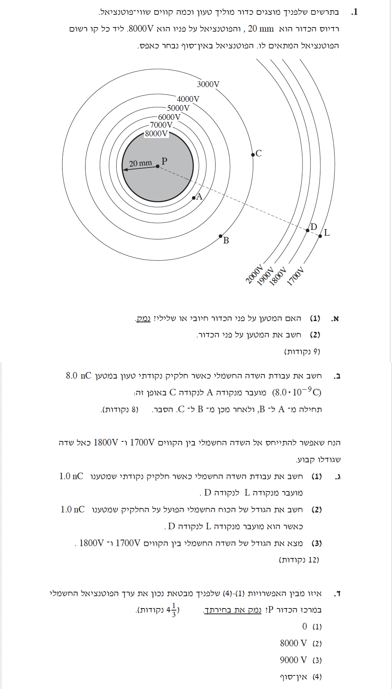

פתרון בגרות פיזיקה - חשמל 2011
שאלון 5 יח"ל - שאלה 1
פתרון מלא, מודרך וצעד-אחר-צעד כולל הסברים מפורטים להבנת הרעיונות הפיזיקליים.
עודכן:
--- --:--:--
מבט כללי על השאלה
שאלת בגרות קלאסית העוסקת בפוטנציאל חשמלי ושדה חשמלי סביב כדור מוליך בשיווי משקל אלקטרוסטטי, ועבודת כוח חשמלי.
נצטרך לשים לב היטב לשלבי העבודה: ביצוע שלב 0 של המרת יחידות (MKS), שימוש בנוסחאות הפוטנציאל של מטען נקודתי, והבנת הקשר בין פוטנציאל חשמלי לעבודה – תוך ניצול התכונה של הכוח החשמלי ככוח משמר.

[תמונת השאלה המקורית]
לא נמצאה תמונה בשם question-image.png באותה תיקייה.
מה נתון:
- פוטנציאל על פני הכדור: \( V = 8000 \text{ V} \)
- הפוטנציאל חיובי, והולך וקטן ככל שמתרחקים מהכדור (מ-8000 וולט יורד לכיוון 0 באינסוף).
מה מחפשים:
לקבוע ולנמק האם המטען על פני הכדור חיובי או שלילי.
נוסחאות ועקרונות בשימוש:
\( V = k \frac{q}{r} \) - פוטנציאל חשמלי סביב מטען נקודתי (או כדור מוליך).
פתרון צעד-אחר-צעד:
על פי הנוסחה, מכיוון שהקבוע האלקטרוסטטי \( k \) והמרחק \( r \) הם תמיד גדלים חיוביים, הסימן של הפוטנציאל \( V \) זהה לסימן של המטען \( q \).
מכיוון שנתון לנו כי הפוטנציאל על הכדור ובסביבתו הוא חיובי (\( V > 0 \)), בהכרח נובע שהמטען היוצר אותו הוא חיובי. בנוסף, קווי השדה (מהפוטנציאל הגבוה לנמוך) מצביעים החוצה, מה שמאפיין מטען חיובי.
מסקנה: המטען על פני הכדור הוא חיובי.
טיפ מורה:
זכרו תמיד: פוטנציאל חשמלי הוא סקלר שיכול להיות חיובי או שלילי. מטען חיובי מייצר בסביבתו פוטנציאל חיובי (כמו "הר" טופוגרפי), ומטען שלילי מייצר פוטנציאל שלילי (כמו "בור").
מה נתון:
- פוטנציאל על פני הכדור: \( V = 8000 \text{ V} \)
- רדיוס הכדור: חובה להמיר ליחידות MKS (מטרים)!
\( R = 20 \text{ mm} = 20 \cdot 10^{-3} \text{ m} = 0.02 \text{ m} \)
- קבוע קולון: \( k = 9 \cdot 10^9 \text{ N} \cdot \text{m}^2 / \text{C}^2 \)
מה מחפשים:
את גודל המטען \( q \) שעל פני הכדור.
נוסחאות ועקרונות בשימוש:
\( V = k \frac{q}{r} \)
פתרון צעד-אחר-צעד:
נבודד את המטען \( q \) מתוך נוסחת הפוטנציאל:
\[ V = k \frac{q}{r} \Rightarrow q = \frac{V \cdot r}{k} \]
נציב את הנתונים (על פני הכדור \( r = R \)):
\[ q = \frac{8000 \cdot 0.02}{9 \cdot 10^9} \]
\[ q = \frac{160}{9 \cdot 10^9} \]
\[ q = 1.777... \cdot 10^{-8} \text{ C} \]
מסקנה (עיגול ל-3 ספרות מהותיות): \( q = 1.78 \cdot 10^{-8} \text{ C} \).
טיפ מורה:
שלב 0 של המרת יחידות הציל אותנו כאן! תלמידים רבים מציבים בטעות את המרחק במילימטרים ומקבלים תשובה שגויה בכמה סדרי גודל. תמיד עבדו ב-MKS.
מה נתון:
- מטען נקודתי המועבר (המרה ל-MKS!):
\( q_0 = 8.0 \text{ nC} = 8.0 \cdot 10^{-9} \text{ C} \)
- פוטנציאל בנקודה A (מתוך התרשים): \( V_A = 6000 \text{ V} \)
- פוטנציאל בנקודה C (מתוך התרשים): \( V_C = 3000 \text{ V} \)
- החלקיק מועבר מ-A ל-B, ולאחר מכן מ-B ל-C.
מה מחפשים:
לחשב את עבודת השדה החשמלי בתהליך ההעברה הכולל ולהסביר.
נוסחאות ועקרונות בשימוש:
\( W_{A \to C} = q_0 \cdot V_{AC} \) (עבודת הכוח החשמלי)
\( V_{AC} = V_A - V_C \) (מתח בין שתי נקודות)
פתרון צעד-אחר-צעד:
הכוח החשמלי הוא כוח משמר. לכן, עבודתו אינה תלויה במסלול התנועה אלא רק בנקודת ההתחלה ובנקודת הסיום. מכיוון שהעבודה אינה תלויה במסלול, העובדה שהחלקיק עבר דרך נקודה B אינה משנה כלל את העבודה הכוללת. העבודה תלויה אך ורק בפוטנציאל בהתחלה (A) ובסוף (C).
נציב את הנתונים:
\[ W_{A \to C} = q_0 (V_A - V_C) \]
\[ W_{A \to C} = 8.0 \cdot 10^{-9} \cdot (6000 - 3000) \]
\[ W_{A \to C} = 8.0 \cdot 10^{-9} \cdot 3000 \]
\[ W_{A \to C} = 24000 \cdot 10^{-9} = 2.4 \cdot 10^{-5} \text{ J} \]
מסקנה (ב-3 ספרות מהותיות): \( W = 2.40 \cdot 10^{-5} \text{ J} \).
טיפ מורה:
איך נדע שהתוצאה הגיונית? תמיד מומלץ לעשות "בדיקת שפיות" לסימן של העבודה. במקרה שלנו יצאה עבודה חיובית, וזה מושלם! מטען חיובי שנע מפוטנציאל גבוה לנמוך מתנהג כמו סלע שנופל במורד הר – זוהי תנועה ספונטנית. מכיוון שהכוח החשמלי מצביע באותו כיוון של ההעתק, הוא עושה עבודה חיובית.
ומה לגבי מטען שלילי? מטען שלילי אוהב באופן ספונטני "לעלות" במעלה הפוטנציאל (מנמוך לגבוה). גם בתנועה כזו, הכוח הפועל עליו הוא באותו כיוון של ההעתק, ולכן גם עבודת השדה תהיה חיובית.
כלל אצבע מנצח: בכל פעם שמטען (חיובי או שלילי) נע בכיוון שאליו השדה החשמלי "רוצה" לדחוף אותו (תנועה ספונטנית) – עבודת השדה תמיד תהיה חיובית!
מה נתון:
- מטען נקודתי חדש המועבר: \( q_1 = 1.0 \text{ nC} = 1.0 \cdot 10^{-9} \text{ C} \)
- פוטנציאל בנקודה D (על קו 1800V): \( V_D = 1800 \text{ V} \)
- פוטנציאל בנקודה L (על קו 1700V): \( V_L = 1700 \text{ V} \)
- הנחה: ניתן להתייחס לשדה בין קווים אלו כאל שדה קבוע.
מה מחפשים:
למצוא את עבודת השדה החשמלי כאשר החלקיק מועבר מנקודה L לנקודה D.
נוסחאות ועקרונות בשימוש:
\( W_{L \to D} = q_1 (V_L - V_D) \)
פתרון צעד-אחר-צעד:
נציב את הנתונים בנוסחת העבודה, כאשר נקודת ההתחלה היא L ונקודת הסיום היא D:
\[ W_{L \to D} = 1.0 \cdot 10^{-9} \cdot (1700 - 1800) \]
\[ W_{L \to D} = 1.0 \cdot 10^{-9} \cdot (-100) \]
\[ W_{L \to D} = -1.0 \cdot 10^{-7} \text{ J} \]
מסקנה: \( W_{L \to D} = -1.00 \cdot 10^{-7} \text{ J} \).
טיפ מורה:
למה העבודה יצאה שלילית? חישבו על הכלל שלמדנו בסעיף ב'! מטען חיובי "אוהב" באופן ספונטני לרדת במורד הפוטנציאל (מ-1800V ל-1700V). כאן המטען נע בכיוון ההפוך (מ-1700V ל-1800V). זה כמו לגלגל סלע במעלה ההר – הכוח החשמלי (שדוחף החוצה) מנוגד לכיוון התנועה (פנימה), ולכן העבודה שהוא עושה היא שלילית!
מה נתון:
- עבודה שנעשתה (מסעיף קודם): \( W_{L \to D} = -1.0 \cdot 10^{-7} \text{ J} \)
- פוטנציאלים ומיקומים: \( V_D = 1800 \text{ V} \) , \( V_L = 1700 \text{ V} \)
- מטען הכדור המקורי (מסעיף א'): \( q = \frac{160}{9 \cdot 10^9} \text{ C} \)
מה מחפשים:
את גודל הכוח החשמלי הפועל על החלקיק כאשר הוא מועבר מ-L ל-D.
נוסחאות ועקרונות בשימוש:
מכיוון שאנו מניחים שהשדה קבוע באזור זה, גם הכוח החשמלי נחשב קבוע.
\( W = F \cdot \Delta x \cdot \cos \theta \) - עבודה של כוח קבוע (כולל הזווית בין הכוח להעתק).
\( V = k \frac{q}{r} \) - למציאת המרחקים מהמרכז.
תרשים: תנועת המטען בשדה "אחיד" בקירוב בין L ל-D
חישוב צעד-אחר-צעד:
תחילה, נמצא את המרחקים \( r_D \) ו-\( r_L \) ממרכז הכדור באמצעות נוסחת הפוטנציאל:
\[ V = k \frac{q}{r} \Rightarrow r = \frac{k q}{V} \]
נחשב את \( r_D \):
\[ r_D = \frac{9 \cdot 10^9 \cdot 1.7778 \cdot 10^{-8}}{1800} = \frac{160}{1800} \text{ m} \approx 0.08889 \text{ m} \]
נחשב את \( r_L \):
\[ r_L = \frac{160}{1700} \text{ m} \approx 0.09412 \text{ m} \]
נחשב את גודל ההעתק \( \Delta x \) (המרחק בין הקווים):
\[ \Delta x = r_L - r_D = 0.09412 - 0.08889 = 0.00523 \text{ m} \]
בתנועה מ-L ל-D, המטען מתקרב למרכז (שמאלה בתרשים), בעוד הכוח החשמלי דוחף אותו החוצה (ימינה בתרשים). לכן הזווית בין הכוח להעתק היא 180 מעלות (\( \cos 180^\circ = -1 \)). נשתמש בנוסחת העבודה כדי למצוא את גודל הכוח \( F \):
\[ W = F \cdot \Delta x \cdot (-1) \Rightarrow F = \frac{W}{-\Delta x} \]
\[ F = \frac{-1.0 \cdot 10^{-7}}{-0.0052288} = 1.912... \cdot 10^{-5} \text{ N} \]
מסקנה: גודל הכוח הוא \( F = 1.91 \cdot 10^{-5} \text{ N} \).
טיפ מורה:
חשוב לשמור על דיוק רב בשלבי הביניים! אם היינו מעגלים את \( r_D \) ו-\( r_L \) בצורה גסה, ההפרש \( \Delta x \) היה נפגע משמעותית. עגלו תמיד רק את התוצאה הסופית.
מה נתון:
- גודל הכוח הפועל על המטען: \( F = 1.9125 \cdot 10^{-5} \text{ N} \)
- המטען עצמו: \( q_1 = 1.0 \cdot 10^{-9} \text{ C} \)
- לחלופין, הפרש הפוטנציאלים \( \Delta V = 100 \text{ V} \) והמרחק \( \Delta x \approx 0.00523 \text{ m} \).
מה מחפשים:
את גודל השדה החשמלי \( E \) בין הקווים 1700V ל- 1800V.
נוסחאות ועקרונות בשימוש:
\( \vec{E} = \frac{\vec{F}}{q} \) - גודל השדה החשמלי מתוך הגדרת הכוח.
ניתן גם להשתמש ב: \( E = -\frac{\Delta V}{\Delta x} \) (עבור שדה אחיד).
פתרון צעד-אחר-צעד:
הדרך הקצרה ביותר היא להשתמש בכוח שכבר מצאנו בסעיף הקודם. נבודד את \( E \):
\[ E = \frac{F}{q_1} \]
\[ E = \frac{1.9125 \cdot 10^{-5}}{1.0 \cdot 10^{-9}} \]
\[ E = 19125 \text{ V/m} \quad (\text{או } \text{N/C}) \]
נעגל ל-3 ספרות מהותיות ונעבור לכתיב מדעי.
מסקנה: \( E = 1.91 \cdot 10^4 \text{ V/m} \).
טיפ מורה:
שימו לב ליחידות המידה: לשדה חשמלי יש שתי יחידות שקולות לחלוטין – N/C (ניוטון לקולון) הנובעת מ- F/q, ו- V/m (וולט למטר) הנובעת מ- \(\Delta V / \Delta x\). שתיהן נכונות ותקינות בבגרות!
מה נתון:
- כדור מוליך טעון, במצב אלקטרוסטטי.
- פוטנציאל על פני הכדור הוא \( 8000 \text{ V} \).
- נקודה P נמצאת במרכז הכדור (כלומר בתוך המוליך).
מה מחפשים:
לבחור את האפשרות הנכונה מבין ארבע אפשרויות המייצגת את הפוטנציאל בנקודה P, ולנמק.
- 0
- 8000 V
- 9000 V
- אינסוף
נוסחאות ועקרונות בשימוש:
עקרון: מוליך בשיווי משקל אלקטרוסטטי - השדה החשמלי בתוך מוליך טעון במצב אלקטרוסטטי שווה לאפס (\( E = 0 \)).
מכיוון ש- \( E = - \frac{\Delta V}{\Delta x} \), אם השדה הוא אפס, אין הפרש פוטנציאלים בתוך המוליך (\( \Delta V = 0 \)).
פתרון צעד-אחר-צעד:
כאשר אנו מזיזים מטען בוחן מפני הכדור אל מרכזו, השדה החשמלי לאורך כל הדרך בתוך המוליך שווה לאפס.
לכן, לא פועל כוח חשמלי ולא נעשית שום עבודה חשמלית בתנועה זו (\( W = 0 \)).
מכיוון ש- \( W = q \Delta V = 0 \), נובע כי \( \Delta V = 0 \), כלומר הפוטנציאל בכל נקודה בתוך הכדור, כולל במרכזו (נקודה P), שווה לפוטנציאל על פני הכדור.
לפיכך הפוטנציאל ב-P הוא 8000V.
מסקנה: אפשרות (2) היא הנכונה, הפוטנציאל הוא \( 8000 \text{ V} \).
טיפ מורה:
טעות נפוצה היא לחשוב שהפוטנציאל במרכז מתאפס בגלל שהשדות מכל הכיוונים מבטלים זה את זה. זה נכון שהשדה הוקטורי מתאפס לאפס, אבל הפוטנציאל (שהוא סקלר המייצג אנרגיה) נשאר קבוע ושווה לזה שעל שפת הכדור! מוליך הוא "גוף שווה-פוטנציאל".